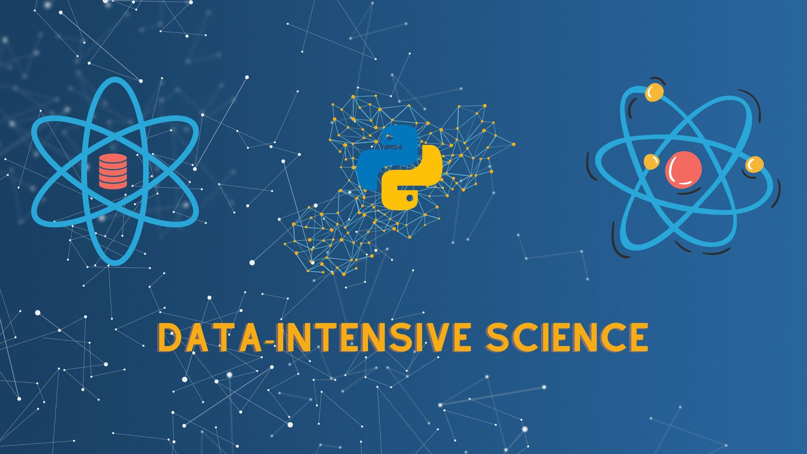

قصة العلوم والتكنولوجيا
قصة العلوم هي قصتنا جميعًا؛ إنها قصة البشرية جمعاء منذ بداية الحياة وحتى يومنا هذا. قد تختلف الدوافع والرغبات
لدى الباحثين في مجالات العلوم المختلفة، لكن الشغف والفضول ومتعة اكتشاف الأشياء والرغبة في استكشاف المجهول كانت
هي العامل المشترك بين كل العلماء والمخترعين على مر التاريخ. قصة العلوم والتكنولوجيا هي قصة يمتزج فيها العمل
الشاق بالأحلام والطموح، والفضول الإنساني بالخيال العلمي الذي لا حدود له.
....

Credit of the image: gatesnotes
الذكاء الاصطناعي ودروه في الاختراقات العلمية المستقبلية
يقود الذكاء الاصطناعي بالفعل العديد من الاكتشافات العلمية والتطورات الجديدة في مجالات العلوم والهندسة والبحث والتطوير، ويستخدم في تطبيقات الحياة اليومية أيضًا. ورغم أننا في بداية نمو هذا المجال، إلا أن هناك دلائل ملموسة على قدرة الذكاء الاصطناعي على اكتشاف القوانين العلمية وحل المشاكل وهناك العديد من التجارب الناجحة. ومع استمرار التطور التكنولوجي وتحسن قدرات الذكاء الاصطناعي، ....
الذكاء الاصطناعي ... فرص حقيقة أم تحديات إضافية
الذكاء الاصطناعي التوليدي وتطبيقاته العملية
قواعد البيانات المُتجهية
قريباً
قريباً